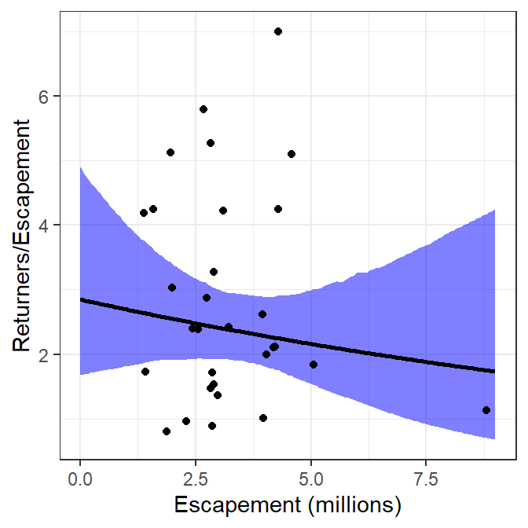

library(FSA) # for headtail(), srStarts(), srFuns()
library(dplyr) # for filter(), mutate(), select()
library(nlstools) # for nlsBoot()
library(ggplot2)
theme_set(theme_bw())
Note
The following packages are loaded for use below. I also set the default ggplot theme to theme_bw() for a classic “black-and-white” plot (rather than the default plot with a gray background).
Introduction
A fishR user recently asked me
In the book that you published, I frequently use the stock-recruit curve code. The interface that shows both the Ricker/Beverton-Holt figure with the recruit per spawner to spawner figure (i.e., the dynamic plot for
srStarts()) has not been working for quite some time. Additionally, I can get the recruits versus spawner plot for the Beverton-Holt or Ricker curve with confidence bounds around the curve, but how do you do the same for the recruit per spawner to spawner curve?
In this post I will answer the first question and provide a possible answer to the second questions. I will use the PSalmonAK data used in the book (Ogle 2016) and available in FSAdata.1 As in the book, I remove all records with missing stock (escapement) or recruit (return) data, rescale both the escapement and return variables to be 1000s of 1000s of fish (so millions of fish), create a log of returns variable (logret), create “recruits per spawner” (retperesc) and log recruits per spawner (logretperesc) variables, and, for convenience, remove the harvest and SST variables.
1 Also documented here.
data(PSalmonAK,package="FSAdata")
pinks <- PSalmonAK |>
filter(!is.na(escapement),!is.na(return)) |>
mutate(escapement=escapement/1000,return=return/1000,
logret=log(return),
retperesc=return/escapement,logretperesc=log(retperesc)) |>
select(-harvest,-SST)
headtail(pinks)#R| year escapement return logret retperesc logretperesc
#R| 1 1960 1.418 2.446 0.894454 1.724965 0.5452066
#R| 2 1961 2.835 14.934 2.703640 5.267725 1.6615986
#R| 3 1962 1.957 10.031 2.305680 5.125703 1.6342676
#R| 28 1987 4.289 18.215 2.902245 4.246911 1.4461918
#R| 29 1988 2.892 9.461 2.247178 3.271438 1.1852298
#R| 30 1989 4.577 23.359 3.150982 5.103561 1.6299386
Dynamic Plot Issue
Since Ogle (2016) was published the dynamicPlot= argument was removed from srStarts() in FSA because the code for that argument relied on the tcltk package, which I found difficult to reliably support. A similar, though more manual, approach is accomplished with the new fixed= and plot= arguments. For example, using plot=TRUE (without fixed=) generates a plot of “recruits” versus “stock” with the chosen stock-recruitment model evaluated at the automatically chosen parameter starting values superimposed.
svR <- srStarts(return~escapement,data=pinks,type="Ricker",plot=TRUE)
The user, however, can show the stock-recruitment model evaluated at manually chosen parameter starting values by including those starting values in a named list() supplied to fixed=. These values can be iteratively changed in subsequent calls to srStarts() to manually find starting values that provide a model that reasonably fits (by eye) the stock-recruit data.
svR <- srStarts(return~escapement,data=pinks,type="Ricker",plot=TRUE,
fixed=list(a=4,b=0.15))
Important
srStarts() no longer, however, supports the simultaneously plotting of spawners versus recruits and recruits per spawner versus recruits.
Plot of Recruits per Spawner versus Spawners
The first way that I imagined plotting recruits per spawners versus spawners with the fitted curve and confidence bands is to first follow the code for fitting the stock-recruit function to the stock and recruit data as described in Ogle (2016). In this case, the stock-recruit function is fit on the log scale to adjust for a multiplicative error structure (as described in the book).2
2 The manually selected starting values from above are used here.
rckr <- srFuns("Ricker")
srR <- nls(logret~log(rckr(escapement,a,b)),data=pinks,start=svR)
bootR <- nlsBoot(srR)
cbind(estimates=coef(srR),confint(bootR))#R| estimates 95% LCI 95% UCI
#R| a 2.84924199 1.70935506 4.6711392
#R| b 0.05516673 -0.08391462 0.1994054Ogle (2016) showed how to plot spawners versus recruits using base graphics. Here however I will use ggplot2. Either method first requires (i) constructing a sequence of “x” values that span the range of observed numbers of spawners,3 (ii) predicting the number of recruits at each spawner value using the best-fit stock-recruitment model, and (iii) constructing lower and upper confidence bounds for the predicted number of recruits at each spawner value with the bootstrap results. These results are assigned to a data framed called preds below.
3 Increase the value in length.out= for a smoother curve and band.
x <- seq(0,9,length.out=199) # many S for prediction
pR <- rckr(x,a=coef(srR)) # predicted mean R
LCI <- UCI <- numeric(length(x))
for(i in 1:length(x)) { # CIs for mean R @ each S
tmp <- apply(bootR$coefboot,MARGIN=1,FUN=rckr,S=x[i])
LCI[i] <- quantile(tmp,0.025)
UCI[i] <- quantile(tmp,0.975)
}
preds <- data.frame(escapement=x,return=pR,LCI=LCI,UCI=UCI)
headtail(preds)#R| escapement return LCI UCI
#R| 1 0.00000000 0.0000000 0.00000000 0.0000000
#R| 2 0.04545455 0.1291866 0.07794713 0.2103041
#R| 3 0.09090909 0.2577262 0.15650236 0.4166059
#R| 197 8.90909091 15.5279219 6.50772063 34.9827333
#R| 198 8.95454545 15.5680589 6.48296004 35.2738317
#R| 199 9.00000000 15.6078974 6.45812729 35.5664363
The recruits versus spawners graph is then constructed in ggplot2 by adding the 95% confidence band from preds using geom_ribbon(), adding the best-fit model curve from preds using geom_line(), and adding the observed data from pinks using geom_point().4
4 I plot the layers in this order so that the line is on top of the confidence band and the points are on top of both the line and band.
ggplot() +
geom_ribbon(data=preds,mapping=aes(x=escapement,ymin=LCI,ymax=UCI),
fill="gray50",alpha=0.5) +
geom_line(data=preds,mapping=aes(x=escapement,y=return),linewidth=1) +
geom_point(data=pinks,mapping=aes(x=escapement,y=return)) +
scale_x_continuous(name="Escapement (millions)") +
scale_y_continuous(name="Returners (millions)")
These results can be modified to plot recruits per spawner versus spawners by replacing the “recruits” in the code above with “recruits per spawner.” This is simple for the observed data as return is simply replaced with retperesc. However, the predicted number of recruits (return in preds) and the confidence bounds (LCI and UCI in preds) from above must be divided by the number of spawners (escapement in preds). The preds data frame is modified accordingly below.
preds <- preds |>
mutate(retperesc=return/escapement,
rpeLCI=LCI/escapement,
rpeUCI=UCI/escapement)The plot is then constructed with the appropriate modification of variable names and axis labels.5
5 I used red for the confidence band here for illustrative purposes below, usually I would use a gray as in Figure 3.
ggplot() +
geom_ribbon(data=preds,mapping=aes(x=escapement,ymin=rpeLCI,ymax=rpeUCI),
fill="red",alpha=0.5) +
geom_line(data=preds,mapping=aes(x=escapement,y=retperesc),linewidth=1) +
geom_point(data=pinks,mapping=aes(x=escapement,y=retperesc)) +
scale_x_continuous(name="Escapement (millions)") +
scale_y_continuous(name="Returners/Escapement")
Alternatively, the Ricker model could be reparameterized by dividing each side of the function by “spawners” such that the left-hand-side becomes “recruits per spawner.”6 This recruitment model can be put into an R function, with parameters estimated with nonlinear regression similar to above. The results below show that the parameter point estimates are identical and the bootsrapped confidence intervals are similar to what was obtained above.
6 This is a fairly typical reparameterization of the Ricker model.
rckr2 <- function(S,a,b=NULL) {
if (length(a)>1) { b <- a[[2]]; a <- a[[1]] }
a*exp(-b*S)
}
srR2 <- nls(logretperesc~log(rckr2(escapement,a,b)),data=pinks,start=svR)
bootR2 <- nlsBoot(srR2)
cbind(estimates=coef(srR2),confint(bootR2))#R| estimates 95% LCI 95% UCI
#R| a 2.84924192 1.67775104 4.9025369
#R| b 0.05516672 -0.08979965 0.2103898With this, a second method for plotting recruits per spawner versus spawners is the same as how the main plot from the book was constructed but modified to use the results from this reparameterized function.
x <- seq(0,9,length.out=199) # many S for prediction
pRperS <- rckr2(x,a=coef(srR2)) # predicted mean RperS
LCI2 <- UCI2 <- numeric(length(x))
for(i in 1:length(x)) { # CIs for mean RperS @ each S
tmp <- apply(bootR2$coefboot,MARGIN=1,FUN=rckr2,S=x[i])
LCI2[i] <- quantile(tmp,0.025)
UCI2[i] <- quantile(tmp,0.975)
}
preds2 <- data.frame(escapement=x,retperesc=pRperS,rpeLCI=LCI2,rpeUCI=UCI2)
headtail(preds2)#R| escapement retperesc rpeLCI rpeUCI
#R| 1 0.00000000 2.849242 1.6777510 4.902537
#R| 2 0.04545455 2.842106 1.6841248 4.846330
#R| 3 0.09090909 2.834988 1.6905230 4.796657
#R| 197 8.90909091 1.742930 0.6884826 4.213108
#R| 198 8.95454545 1.738565 0.6821556 4.229946
#R| 199 9.00000000 1.734211 0.6758867 4.246851ggplot() +
geom_ribbon(data=preds2,mapping=aes(x=escapement,ymin=rpeLCI,ymax=rpeUCI),
fill="blue",alpha=0.5) +
geom_line(data=preds2,mapping=aes(x=escapement,y=retperesc),linewidth=1) +
geom_point(data=pinks,mapping=aes(x=escapement,y=retperesc)) +
scale_x_continuous(name="Escapement (millions)") +
scale_y_continuous(name="Returners/Escapement")
The two methods described above for plotting recruits per spawner versuse spawners are identical for the best-fit curve and nearly identical for the confidence bounds (slight differences likely due to the randomness inherent in bootstrapping). Thus, the two methods produce nearly the same visual.
ggplot() +
geom_ribbon(data=preds,mapping=aes(x=escapement,ymin=rpeLCI,ymax=rpeUCI),
fill="red",alpha=0.25) +
geom_ribbon(data=preds2,mapping=aes(x=escapement,ymin=rpeLCI,ymax=rpeUCI),
fill="blue",alpha=0.25) +
geom_line(data=preds,mapping=aes(x=escapement,y=retperesc),linewidth=1) +
geom_line(data=preds2,mapping=aes(x=escapement,y=retperesc),linewidth=1) +
geom_point(data=pinks,mapping=aes(x=escapement,y=retperesc)) +
scale_x_continuous(name="Escapement (millions)") +
scale_y_continuous(name="Returners/Escapement")
References
Reuse
Citation
BibTeX citation:
@misc{h.ogle2017,
author = {Derek H. Ogle},
title = {Stock-Recruitment {Graphing} {Questions}},
date = {2017-12-12},
url = {https://fishr-core-team.github.io/fishR//blog/posts/2017-12-12_StockRecruit_Graph_Questions},
langid = {en}
}
For attribution, please cite this work as:
Derek H. Ogle. 2017, December 12. Stock-Recruitment
Graphing Questions.